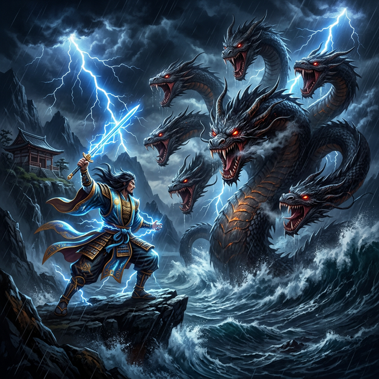

高天原から──出雲が見えた。
アマテラスは──地上を見下ろしていた。天岩戸の一件以来、微笑みの仮面を被り直した太陽の女神は──しかし、以前とは少し違っていた。仮面の下に──感情がある。怒りもあれば悲しみもある。ただ──見せない。
地上──葦原中国は、大国主の統治で──豊かになっていた。田は実り、民は増え、道が通り、港が開かれ──見事な国だった。
「──あの国は──誰が治めている」
「──大国主命。スサノオの子孫です」
オモイカネが答えた。
「──スサノオの──」
弟の子孫。追放した弟の血を引く者が──地上を治めている。
アマテラスは──複雑な思いを抱いた。しかし──それを表に出さなかった。代わりに──冷静に、判断した。
「──葦原中国は──天津神が治めるべき国だ。大国主に──国を譲ってもらいましょう」
国譲り。
この決定が正義なのか横暴なのか──語り部にも分からない。しかし──アマテラスにとっては「正しいこと」だった。天の神が地上を統治する。それが──あるべき姿だと。
＊
最初の使者は──アメノホヒだった。誓約の時に生まれた五男神の一柱。
しかし──アメノホヒは三年経っても戻らなかった。大国主に懐柔され──出雲に居ついてしまった。
「──何をしている」
アマテラスが怒るのも無理はなかった。使者が──敵に取り込まれた。
二番目の使者──アメノワカヒコ。若く美しい神。しかし──この男もまた、八年戻らなかった。大国主の娘シタテルヒメと恋に落ち──出雲に留まった。
使者を出すたびに──出雲に吸い込まれる。大国主の国は──それほどに魅力的だった。豊かで、穏やかで、温かい。高天原の完璧で冷たい秩序とは──対極の世界。
アマテラスは──三番目の使者を選ぶ時、慎重になった。
「──今度は──懐柔されない者を」
オモイカネが進言した。
「──タケミカヅチ。雷の神。カグツチの血から生まれた──戦いの神です」
タケミカヅチ──建御雷神。イザナギがカグツチを斬った時、血飛沫から生まれた神。怒りと暴力の血を引く──戦闘の専門家。
「──彼ならば──大国主の穏やかさに取り込まれることはないでしょう」
タケミカヅチは──出雲に降りた。
稲佐の浜に──十拳剣を逆さに突き立て、その切っ先の上に胡座をかいて座った。剣の先端──数ミリの面積の上に、全身の重さを乗せて。
これは──脅迫だった。「話し合いに来た」のではなく「力を見せに来た」のだ。
大国主は──その姿を遠目に見て──溜息をついた。
「──来たか」
「──ふうん。来たみたいね」
スセリビメが──夫の隣にいた。
「──どうするの」
「──……話を聴こう。まず──話を」
「──あなたらしいわね。剣を突き立てている相手に──話を聴こうだなんて」
大国主は──稲佐の浜に向かった。
*次回、第31話「国譲り」*
*タケミカヅチの要求。大国主の息子たちの選択。*
*そして──大国主は、最も困難な決断を下す。*
